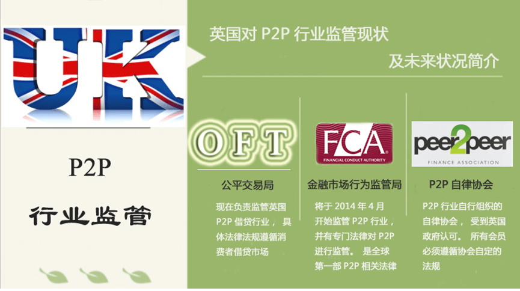
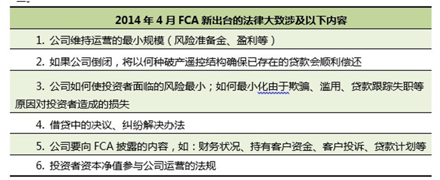
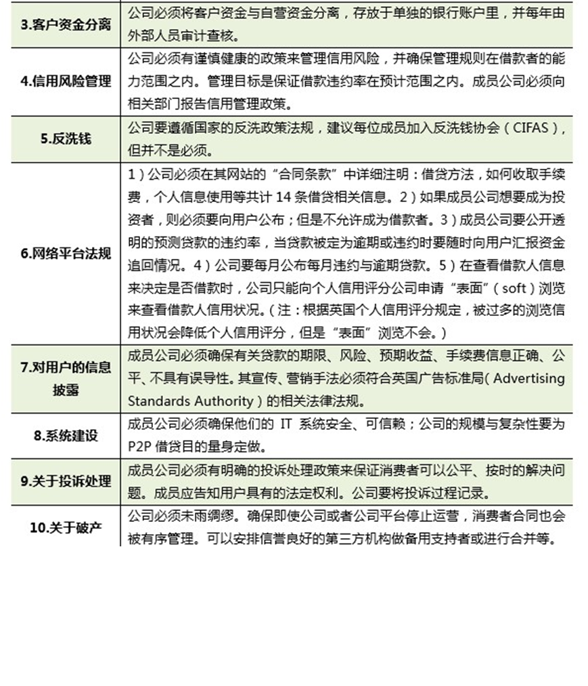

作为新兴行业，英国政府对其怎么看呢？当然是全力支持！虽然各国政府目前都没有针对P2P的专门法律法规。但作为P2P行业的发源地，英国已经于2013草拟出了针对P2P行业的法规，并将于2014年4月正式生效并启用，是全球第一部P2P行业法案。从这里可以看出，英国对P2P行业是支持、理解、并十分在意的。那么英国到底对P2P是如何监管的呢？我们将于来了解一下。
根据调查，英国P2P行业的监管分为两类：政府监管与行业自律。

初次监管
在最开始，英国将P2P借贷行业划分在消费者信贷市场（ConsumerCreditMarket），交予英国公平交易局（OfficeofFairTrading，OFT）监管。
OFT是1973年成立，英国非盈利性质的非内阁部门（Non-MinisterialGovernmentDepartment），所谓非内阁部门是依据法律设立的，部门首长不是大臣也不是部长，而是通过选举产生的官员或由法定的委员会担任。典型的非内阁部门有主管食品安全的食品标准署、税收和海关署等。（内容来自中华人民共和国商务部）OFT的主要职责是加强消费者保护与维持商业交易公平竞争，是英国的经济监管机构。主要监管内容有：消费者信贷、反洗钱、房地产机构等。
根据消费者信贷市场法规，P2P借贷公司需要遵从《消费者信贷法1974》（ConsumerCreditAct1974），并且必须按照规定从OFT那里获得《消费者信贷许可证》（ConsumerCreditLicense）。《消费者信贷许可证》是从事消费者借贷，提供信贷服务、产品；或者从事辅助性借贷服务活动的机构都需要获得的。
一次权利的转移，一部法律的诞生
2013年初，英国政府称，OFT将于2014年3月末关闭，其各项监管职能都会被分散到其余监管部门。而消费者信贷市场的监管权转移到英国金融市场行为监管局（FinancialConductAuthority，FCA）。
OFT对P2P行业的要求即获得《消费者借贷许可证》，而FCA对P2P行业有新的监管行为，是针对网络贷款平台运作的，除了监管P2P网络平台的运营，还有：
此外，随着监管权力的转移，针对P2P行业的监管法案终于将在2014年4月份面世。

我们期待完整法案的出台，在美国、中国这些P2P借贷发展迅速的国家，它将会是P2P监管最优秀的模板，到时我们将会对其进行更详细的介绍。
整个行业的坚持–P2P行业自律
在没有出台P2P法律之前，除了遵循消费者法案，政府对于行业的法规可以说是空白的。”没人管我们，我们自己管自己！”为了获得公众信任，P2P行业主动成立了自律组织，并制定了一些针对性的法规。我们来了解下”P2PFA”。
P2PFA–PeertoPeerFinanceAssociation，是在2011年由3家领头P2P借贷公司Zopa，RateSetter,FundingCircle自行成立的行业自律协会。成立目的是：确保这种新兴的、快速发展的行业能维持高质量的发展，并保护个人消费者和企业消费者。协会发展至今，现有成员有7位，都是具有一定规模性的英国P2P借贷公司，几乎占据整个市场份额。
这家协会建立之后，主动找到英国政府，申请成为合法组织，并请政府对其监管。经过审核，政府认可其合法性，但却暂时无法出台相关法律。鉴于此协会自行出台了一些法则（OperatingPrinciples），英国政府要求：P2P行业在遵守政府相关法律、规则的同时，也要严格遵守P2PFA所制定的运营法则。这些法则弥补了当时P2P行业法律的空白，也是政府即将出台的新法案的制定基础。协会法则共十项，包括对P2P借贷公司的规模、风险管理手段、合法性、网络平台建设等共十项规定。

总结
即将出台的法案对P2P行业的影响必然是深远的，有利的。为什么呢？首先，作为借贷公司，注定会涉及到人们的信用、人们的资金安全，还有什么比这些更敏感、更让人关注？因此行业的合法性、合规性一旦被政府确定，大众会增加对行业的信心，一定会有更多人参与其中；其次，P2P借贷公司也可以根据法律了解”底线”在哪里，什么可触碰，从而更自由的发展。
从第一家P2P公司的创立，到第一部P2P行业法案的诞生，整个P2P行业展现在我们眼前，就像看着一个孩童慢慢成长起来一样，让人激动、让人欣慰。这个健康发展”孩童”在未来又会带给我们什么样的惊喜呢？共同期待吧！